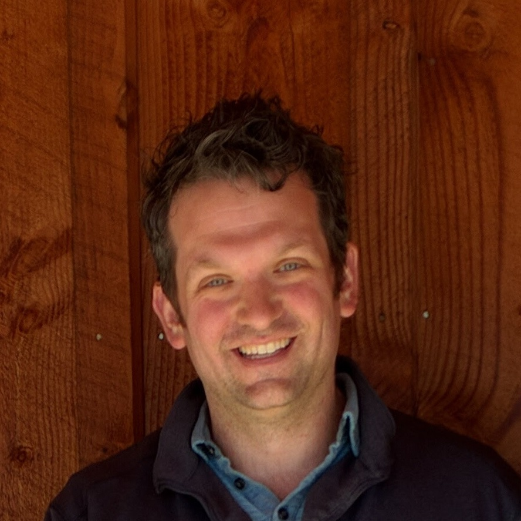
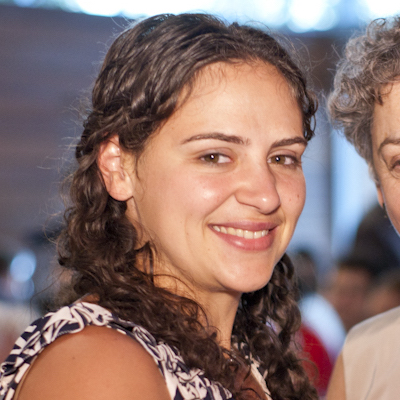
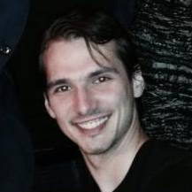
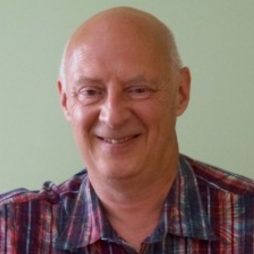

Kyle Lampe
Co-founder, CEO

Dr. Rachel Lampe
Co-founder, Chief Veterinary Officer
Dr. Mark Revenaugh
Veterinary advisor

Andrey Skylar
Senior Software Developer
Ryan McGinty
Software Developer

David Vaskevitch
Technical advisor
Kyle Lampe, Co-founder and CEO.
Kyle is the co-founder and CEO of Victory Parade. Kyle's software career started early, at the age of 16 interning at Microsoft. After receiving a degree in physics from Harvey Mudd College, he joined Microsoft full time eventually led a team of developers on Windows Mobile. Feeling the startup itch, he left to lead development teams at Zumobi and SnapIn (which was acquired by Nuance). Returning to Microsoft, Kyle's work began with 3-d cameras as the lead developer on Kinect Sesame Street TV. He was also the lead developer for the Xbox video editing and sharing platform Upload Studio.
Rachel is the co-founder and Chief Veterinary Officer of Victory Parade.
She grew up riding horses and competed nationally on the hunter-jumper show circuit.
Her first degree was in computer engineering at Tufts University. After 5 years
working in software, she went back to school to become a veterinarian, at the Royal
Veterinary College in London. Summer research during school involved analyzing mouse gaits, building a mouse treadmill, and running horses on treadmills, which inspired some of the ideas leading us to create Victory Parade. She is currently working as a small animal veterinarian.
When not in the hospital, she can be found baking, running, or petting dogs.
Dr. Mark Revenaugh, Veterinary Advisor
Dr. Mark Revenaugh is the owner of Northwest Equine Performance. He is a renowned expert in the diagnosis and treatment of lameness and performance issues, attracting clients from all over the world. His fascination with equine medicine and competitive performance began long before opening his specialty clinic in the Oregon. Dr. Revenaugh has been honored to serve as a Team Veterinarian for the US Equestrian Team. He has helped selecting, treating and advising elite level professionals in the equine industry, maintaining health and maximizing performance.
When not fixing horses, he enjoys outdoor activities like bicycling, camping, and exploring the beautiful pacific northwest with his family.
Andrey is a software engineer with experience in computer vision and graphics. After getting a Master's Degree in Computer Science from Worcester Polytechnic Institute Andrey has primarily worked on small teams to develop and deploy vision based systems. He has worked on human tracking using video, GPS, and RF sensors Sarnoff Corporation. At Amazon, he prototyped and helped develop, deploy, and support a widely-used package sortation system. He is excited about tackling the technical challenges of teaching computers how to understand equine movement.
When not working, Andrey likes to cook, exercise, and be in nature.
Ryan is a recent graduate from the University of Washington with a degree in Electrical Engineering and concentration in Digital Signal Processing. Prior to working at Victory Parade, Ryan interned at Technische Universitat Berlin where he worked on neuro-robotics for stroke patient rehabilitation; and at PhysIQ, a physiology analytics company, where his projects included collection and analyses of wearable sensor data.
When he is not hunched over his computer, he enjoys painfully long bike rides and nature in all forms - hiking, camping or aimless wandering through Seattle parks.
David's career as visionary software architect, business innovator, and author spans more than 30 years. As Chief Technical Officer at Microsoft Corp., he worked to develop a focused and unified strategy and architecture for Microsoft platforms. He is the founder and CEO of Mylio, a company changing the way the world remembers. David is an avid equestrian, and has enjoyed jumping and watching his children ride competitively.
He is an incredible photographer and is most often found on photography treks to some of the most picturesque places in the world.